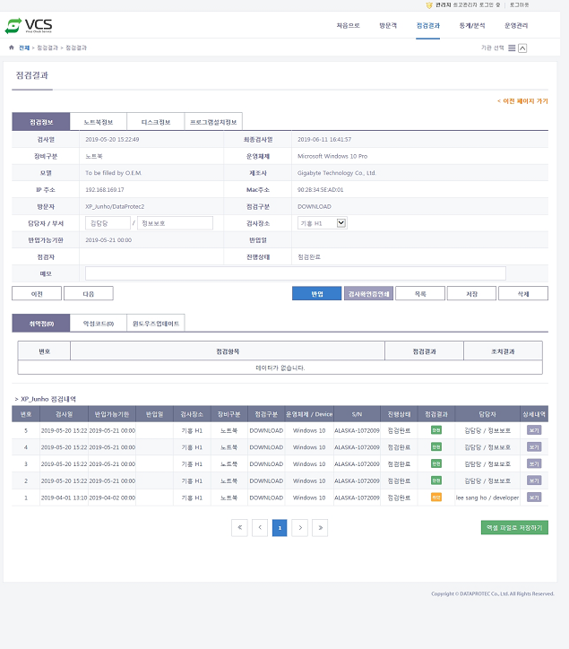

점검결과 상세정보
방문자 VCS 검사결과 상세정보 화면 설명입니다.
일반사항
- 방문객의 점검 결과 상세정보를 확인 할 수 있습니다.
- 반입처리를 할 수 있습니다.
- 검사확인증을 인쇄 할 수 있습니다.
1. 점검결과 상세정보 화면

- 구성 항목
항목 |
상세항목 |
설명 |
비고 |
점검정보 |
검사일 |
검사일시를 표시합니다. |
|
최종검사일 |
가장 최근 검사일시를 표시합니다. |
||
장비구분 |
장비의 유형을 표시합니다. |
노트북/저장매체 |
|
Device |
장비 종류를 표시합니다. |
저장매체만 항목표시 |
|
운영체제 |
장비의 운영체제 이름을 표시합니다. |
노트북만 항목표시 |
|
모델 |
장비의 모델명을 표시합니다. |
노트북만 항목표시 |
|
제조사 |
장비의 제조사명을 표시합니다. |
노트북만 항목표시 |
|
IP주소 |
점검을 위해 접속한 IP주소를 표시합니다. |
노트북만 항목표시 |
|
Mac주소 |
장비의 Mac주소를 표시합니다. |
노트북만 항목표시 |
|
방문자 |
방문자 이름과 업체 이름을 표시합니다. |
||
점검구분 |
장비의 점검방법을 표시합니다. |
DOWNLOAD/DPTKIOSK/KIOSK |
|
담당자/부서 |
방문자의 업무 담당자 이름과 부서 이름을 표시합니다 |
수정가능 |
|
검사장소 |
장비 검사장소를 표시합니다. |
수정가능 |
|
반입가능기한 |
장비 반입가능일시를 표시합니다. |
||
반입일 |
장비 반입일시를 표시합니다. |
||
점검자 |
반입처리한 관리자 이름을 표시합니다. |
||
진행상태 |
검사 진행상태를 표시합니다. |
점검완료/반입완료 |
|
메모 |
메모를 입력합니다. |
수정가능 |
|
노트북 정보 |
장비구분 |
장비의 유형을 표시합니다. |
검사장비가 노트북인 경우만 탭표시 |
운영체제 |
장비에 설치된 운영체제 정보를 표시합니다. |
||
모델 |
장비의 모델명을 표시합니다 |
||
제조사 |
장비의 제조사명을 표시합니. |
||
System S/N |
System 시리얼번호를 표시합니다. |
||
Board S/N |
Board 시리얼번호를 표시합니다. |
||
Hardware S/N |
Hardware 시리얼번호를 표시합니다. |
||
노트북 S/N |
노트북 시리얼번호를 표시합니다. |
||
Host Name |
장비의 Host Name을 표시합니다. |
||
Ram Size |
장비의 Ram Size를 표시합니다. |
||
CPU |
장비의 CPU 사양을 표시합니다. |
||
Mac 주소 |
장비의 Mac 주소를 표시합니다. |
||
Work Group |
장비의 Work Group을 표시합니다. |
||
Boot Device |
장비의 Boot Device를 표시합니다. |
||
사용자계정 |
장비의 사용자 계정을 표시합니다. |
||
Window Directory |
장비의 Windows Directory를 표시합니다. |
||
디스크 정보 |
논리디스크 |
Disk Type, Total Size, Free Size, File System 정보 표시 |
|
물리디스크 |
Disk Type, Model, Size, Sector 정보 표시 |
||
프로그램 설치정보 |
번호 |
목록 번호를 표시합니다. |
검사장비가 노트북인 경우만 탭표시 |
프로그램명 |
설치된 프로그램 이름을 표시합니다. |
||
버전 |
설치된 프로그램의 버전을 표시합니다. |
||
제조사 |
설치된 프로그램의 제조사 정보를 표시합니다. |
||
설치일 |
프로그램 설치일자를 표시합니다. |
||
버튼 |
이전 |
검사결과 목록에서 아래 내역의 검사결과 상세보기 페이지로 이동합니다. |
버튼 |
다음 |
검사결과 목록에서 위 내역의 검사결과 상세보기 페이지로 이동합니다. |
버튼 |
|
반입(취소) |
반입(취소)처리합니다. |
버튼 |
|
검사확인증인쇄 |
검사확인증 출력 창이 뜹니다. |
버튼 |
|
목록 |
검사결과 목록 페이지로 이동합니다. |
버튼 |
|
저장 |
수정한 내용을 저장하고 반영합니다. |
버튼 |
|
삭제 |
검사결과를 삭제합니다. |
버튼 |
|
취약점 |
번호 |
목록 번호를 표시합니다. |
검사장비가 노트북인 경우만 탭표시 |
점검항목 |
취약점 점검항목을 표시합니다. |
||
점검결과 |
취약점 점검결과(취약/안전)를 표시합니다. |
||
조치결과 |
취약점 조치결과(취약/안전)를 표시합니다. |
||
악성코드 |
실행정보 |
백신명, 백신업데이트일자, 스캔일자를 표시합니다. |
|
번호 |
목록 번호를 표시합니다. |
||
운영체제/ Device |
장비의 운영체제, 종류를 표시합니다. |
||
악성코드명 |
장비에 감염된 바이러스 이름을 표시합니다. |
||
파일경로 |
바이러스에 감염된 파일의 경로를 표시합니다. |
||
처리결과 |
감염된 바이러스 파일 처리 결과 코드를 표시합니다. |
||
윈도우즈 업데이트 |
실행정보 |
윈도우즈 업데이트 확인일자, 윈도우즈 업데이트 설치일자를 표시합니다. |
검사장비가 노트북인 경우만 탭표시 |
번호 |
목록 번호를 표시합니다. |
||
패치명 |
윈도우즈 업데이트 패치명을 표시합니다. |
||
설치일자 |
패치 파일 설치일자를 표시합니다. |
||
방문자 점검내역 |
번호 |
목록 번호를 표시합니다. |
정보 |
검사일 |
장비의 검사일시를 표시합니다. |
||
반입가능기한 |
장비의 반입가능기한을 표시합니다. |
||
반입일 |
장비의 반입일시를 표시합니다. |
||
검사장소 |
장비의 검사 장소를 표시합니다. |
||
장비구분 |
장비의 유형을 표시합니다. |
||
점검구분 |
장비의 검사방법을 표시합니다. |
||
운영체제/ Device |
장비의 운영체제, 종류를 표시합니다. |
||
S/N |
장비의 시리얼번호를 표시합니다. |
||
진행상태 |
검사 진행상태(점검완료/반입완료)를 표시합니다. |
||
점검결과 |
장비 점검 결과(안전/취약/악성)를 표시합니다. |
||
담당자 |
방문자의 업무 담당자 이름과 부서를 표시합니다. |
||
상세내역 |
점검결과 상세정보 페이지로 이동합니다. |
링크 |
|
버튼 |
엑셀 파일로 저장하기 |
방문자 점검내역을 엑셀로 내려받기합니다. |
Created with the Personal Edition of HelpNDoc: Generate EPub eBooks with ease